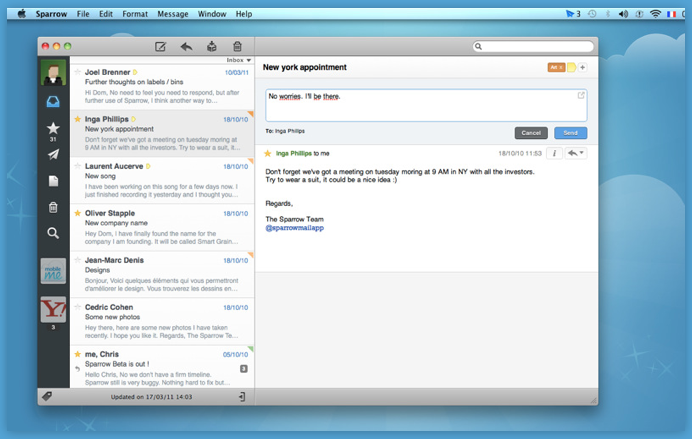
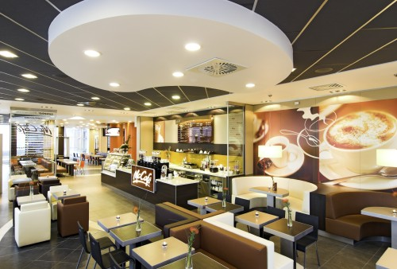

不是讲实践吗？
恩，我决定暂时不说实践细节，改说XD背后的体验经济。理解了体验经济时代的到来就能很好地理解XD越来越被人重视的原因。
那么什么是体验经济？
在讲之前，先讲一个体验经济对我产生效应的故事。在去年年底的时候，我发现了一款Mac下的邮件客户端──Sparrow，当时它还是免费beta阶段。从一开始，我便喜欢上了这款像RSS Feed一样的邮件客户端软件，不论是iOS化的交互模式，比如三栏渐入式的信息架构像极iPad应用，还是界面细节的处理，比如灰度的处理以及图标的质感，都堪称精品。对于查邮件本身来说，无论是Gmail的网页版本或者mac自带的iMail，都已经达到了非常高的易用性，但是，当有这么一款精品软件的时候，你还是不能抗拒，特别当你身边还有多种iOS的设备时。

经过3个月的使用，其中也更新过若干次，对我来说，Sparrow已经建立了相当良好的用户粘性，而且它一直都是免费的。突然它宣布不在提供Beta版本而转为正式收费版本时，我确实在一段时间内重新使用了Gmail的网页版本，直到有一天我更新OSX后，Mac App的出现让我第一时间，只花费了不到1分钟的时间就购买了9.99$的Sparrow正式版，而整个过程的点击只有不超过5次并没有任何复杂的表单出现。
回想起这个过程，我突然觉得体验经济在这个故事中是成功的。要知道让用户为邮件客户端花费9.99$并不是件容易的事，特别是我这样公司负担基本所有软件的用户──我甚至都不会去想是不是问公司能不能提供──我很高兴这9.99$是一笔划算的生意，因为他们的软件让我高兴，而不简单是因为Sparrow能给我带来Gmail网页版本所不能带来的功能。
很好的故事，那么从理论上来说，体验经济是怎么一回事？
体验经济(Experience Economy)的最早提出是来自于著名的未来学家Alvin Toffler的1970年出版著作Future Shock──他用Future Shock诠释人们对“在如此短的时间看到如此巨大变化”的感知。在书中Alvin第一次预言，在未来会产生一种“基于体验的产业(Experiential Industry)”，到那时候，消费者会将大部分的收入投入到获得生活中更优质的体验中去。
经由Future Shock一书的启发，1998年B. Joseph Pine II和James H. Gilmore在其合著的The Experience Economy正式提出体验经济这一概念。在书中，作者认为因为技术、市场竞争、消费者期待、消费活动方式的快速变化，经济模式也在发生相应的巨大变化。
他们认为，就像工业时代的商品经济改变最早农业时代的实物经济，然后又被服务业时代的服务经济所取代，我们现在所在的服务经济也将会被新的体验经济所取代。
而这种新的经济形态的主要特点是：
不可衡量性
体验不是可量化可生产可触摸的产物，而更多的是基于不同思维模式下的消费者，对于商家所提供价值，以及围绕在这个价值周围的附加产物，所产生的整体感知愉悦程度；而不同于传统经济形态中对于商品或服务的好坏都可有较为明确的界定──不同人对于体验的评价不一样；
高互动性
不同于以往的实体经济、商品经济和服务经济，消费者和商家产生交互的内容基本限于议价和提供服务的过程，可量化的经济价值只在这个过程中产生；而体验经济的交互复杂频繁多样，而且往往不产生直接可量化的经济价值；
超高附加值
为什么我会放弃免费且甚至更强大的Gmial而选择付费的Sparrow──一个好的体验设计帮助商家在得到高顾客满意度的同时获得高的附加值。从某种程度上说，苹果优质的体验设计帮助了其绝对左右其消费市场的议价能力，而带来的是无以伦比的边际收益；
使用者绑定能力
体验经济不单使用户成为真实使用者，甚至将用户成为市场营销的一部分，例如迪士尼乐园里类似到此一游的活动，还有foursquare里的勋章系统，以及你上传微博时底下那行“使用iPhone客户端上传”，这些都体验经济正在影响你生活的一部分，它让你不单单成为产品的使用者，还让你成为其市场的推广者，这种客户粘性不是其他经济形态能够比拟的。
好像很不错，那体验经济要如何设计呢？
这又回到了我们上次的话题，体验是不是能够被设计呢？我来回忆一下上一期提到的“潜在使用者”到“真实使用者”过程抽象，看看Sparrow的成功在哪里？从Sparrow的成功里，你可以总结出一些体验经济设计的规律，当然，不同的行业有不同的特点，相关的设计思路也许有不同，这里仅从软件设计（不完全包括产品设计本身，还是背后的整体营销策略）出发：
他了解我的驱动
我的驱动很简单：1.我希望能有新邮件提醒；2.我希望不要每次都使用SecurID Token。而这些都是Gmail网页版本所不能给我的；
他了解我的内在上下文
我有其他iOS设备，我欣赏iOS平台上软件带来的用户体验，我不喜欢丑陋，不追求细节，热爱有设计感的东西；
他了解我的外在上下文
我喜欢在环境中表现不同，喜欢与众不同的品味，喜欢别人附和我的品味，就算是使用Mac也要把Mac变得跟其他人不一样；
他提供我方式让我快速尝试并验证我的驱动，和我的上下文
免费的Beta版本让我没有门槛地开始使用，提供我需要的功能，又不和我的上下文发生冲突；
他尽量缩短我从尝试到真正使用的路径
从Mac App平台上，只需要不超过5次的点击（主要是Apple ID登陆），而且没有一次是表单注册，也不需要任何的安装过程，半分钟我就完成了购买，开始成为Sparrow的“真实使用者”
这个过程就是体验经济设计方法的经典案例──如何通过分析用户的驱动，以及在其成为真实使用者前所需要考虑的上下文，设计出符合驱动，又不与内外上下文冲突的产品，同时降低尝试的门槛和支付的难度。
那么其他行业呢？也适用吗？
当然，比如说麦当劳在中国推出的麦咖啡。麦当劳在中国的连锁店在1000家左右，而肯德基的门店数量是其3倍，而从全球来看，肯德基的母公司百胜的总市值只有麦当劳的1/5。麦当劳在中国的策略开始向“风格café”转移，而不单单只追求门店数量。
这一策略的改变来自于麦当劳发现，第一代麦当劳的消费群体已是近30岁的中青年，他们不在喜欢吃高热烈的汉堡或者苏打水，反而希望可以坐在麦当劳的餐厅里喝咖啡。

从本质上来看，这一策略正是基于对消费者体验的认同和重视，而做出的商业调整。当你发现越来越多麦当劳餐厅改换成欧洲那种有质感却不缺乏轻快的简单明快，而不再有满处乱跑的小屁孩儿，你慢慢就会融入到这种低调不做作的生活模式中（相反，打个车到三里屯找个半生不熟的咖啡店坐着反而成为反生活的不自然），至于麦咖啡到底好不好喝，倒是其次──根本原因在于，我把你当成我生活体验的一部分，不能少。
这就是体验经济在影响我们的真实例子。
下次该讲具体实践方法了吧？
这次说讲就是真的要讲了。